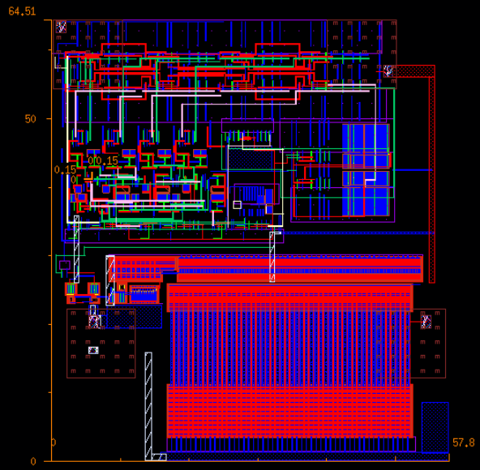

Intro
Hi, I'm Jayanto, an electrical engineer passionate about mixed-signal IC design. I’ve built systems ranging from Low Dropout Regulators to Digital Image Comparators in Cadence. I enjoy working at the intersection of hardware design and embedded systems, and I’m currently pursuing my MSECE at the University of Minnesota.
Feel free to reach out to me for any additional details.
Projects
Image Comparator Circuit

Timeline: Apr 2025 – May 2025
Tools: Cadence Virtuoso, HSPICE, Assura, CosmosScope
Developed an image comparator circuit to identify differences in binary-encoded grayscale images, using XOR gates and adders for pixel-level comparison on Cadence Virtuoso and simulated in HSPICE.
- Parallel-In Parallel-Out (PIPO) register for efficient data handling.
- Parallel-In Serial-Out (PISO) register for serialized output.
- On-chip clock divider to operate at 1/4 of the 2.4 GHz clock.
- DRC and LVS checks in Assura, simulation with CosmosScope.
- Off-chip driver debugged to drive output from 1.1V to 1.8V at 3 GHz with 12 pF load.
Low Dropout Regulator
Timeline: Apr 2025 – May 2025
Tools: Cadence Virtuoso, Analog IC Design
Designed a low dropout regulator (LDO) to meet stringent specifications under load and line regulations, varying load currents, and phase margin requirements.
- Folded Cascode OTA: High gain, low-voltage error amplifier with superior input/output range.
- PMOS Pass Transistor: Enabled low dropout voltage operation under tight headroom.
- Voltage Scalability: Achieved regulated outputs of 1.0V, 1.2V, and 1.4V via reference scaling.
MazEscape
Tools: KiCAD, ESP32, PCB Design, Arduino IDE, Circuit Debugging
Designed a multi-PCB door lock system with ESP32 microcontrollers, keypad inputs, LCD screens, solenoid locks, and WiFi communication.
- Four separate PCBs with synchronized WiFi operation.
- Power management with efficient buck converters for 3.3V and 5V rails.
- Microcontroller programmed to display questions and unlock upon correct keypad input.
Reaction Wheel Pendulum

Tools: MATLAB, Simulink, Embedded Deployment
Designed and implemented a real-time control system for a nonlinear electromechanical pendulum.
- Two-state and three-state PD controllers with friction compensation.
- Luenberger observer for full-state feedback with limited sensors.
- Swing-up control and mode-switching logic in Simulink Stateflow.
AC-DC Power Supply

Tools: LTSpice, PCB Design
Designed and built a regulated 4.7V DC power supply, simulated in LTSpice, prototyped on breadboard, and assembled on PCB.
- ±2% voltage stability for 115–125 Vrms AC input.
- Ripple voltage maintained under 2% of output DC.
- Output current range: 0–20 mA.
About
I’m currently pursuing my Masters in Electrical Engineering at the University of Minnesota, after having graduated from the University of Illinois Urbana-Champaign with a B.Sc. in Electrical Engineering. My main interests lies in Analog IC design and Mixed-signal ICs.
Contact